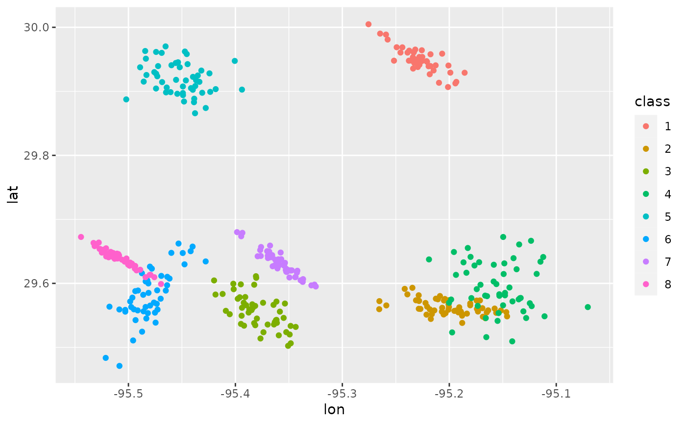
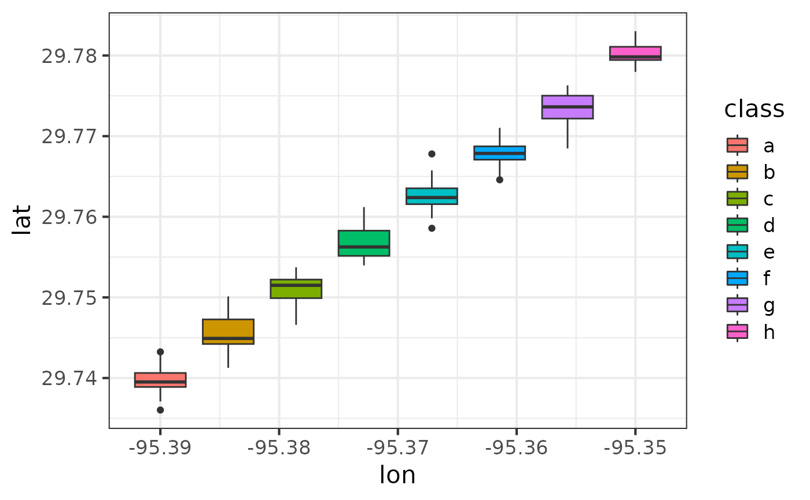

ggmap plots the raster object produced by get_map().
Usage
ggmap(
ggmap,
extent = "panel",
base_layer,
maprange = FALSE,
legend = "right",
padding = 0.02,
darken = c(0, "black"),
b,
fullpage,
expand,
...
)Arguments
- ggmap
an object of class ggmap (from function get_map)
- extent
how much of the plot should the map take up? "normal", "device", or "panel" (default)
- base_layer
a ggplot(aes(...), ...) call; see examples
- maprange
logical for use with base_layer; should the map define the x and y limits?
- legend
"left", "right" (default), "bottom", "top", "bottomleft", "bottomright", "topleft", "topright", "none" (used with extent = "device")
- padding
distance from legend to corner of the plot (used with legend, formerly b)
- darken
vector of the form c(number, color), where number is in (0,1) and color is a character string indicating the color of the darken. 0 indicates no darkening, 1 indicates a black-out.
- b
Deprecated, renamed to
padding. Overrides anypaddingargument.- fullpage
Deprecated, equivalent to
extent = "device"whenTRUE. Overrides anyextentargument.- expand
Deprecated, equivalent to
extent = "panel"whenTRUEandfullpageisFALSE. WhenfullpageisFALSEandexpandisFALSE, equivalent toextent="normal". Overrides anyextentargument.- ...
...
Author
David Kahle david@kahle.io
Examples
if (FALSE) ## map queries drag R CMD check
## extents and legends
##################################################
hdf <- get_map("houston, texas")
ggmap(hdf, extent = "normal")
#> Error in eval(expr, envir, enclos): object 'hdf' not found
ggmap(hdf) # extent = "panel", note qmap defaults to extent = "device"
#> Error in eval(expr, envir, enclos): object 'hdf' not found
ggmap(hdf, extent = "device")
#> Error in eval(expr, envir, enclos): object 'hdf' not found
# make some fake spatial data
mu <- c(-95.3632715, 29.7632836); nDataSets <- sample(4:10,1)
chkpts <- NULL
for(k in 1:nDataSets){
a <- rnorm(2); b <- rnorm(2);
si <- 1/3000 * (outer(a,a) + outer(b,b))
chkpts <- rbind(
chkpts,
cbind(MASS::mvrnorm(rpois(1,50), jitter(mu, .01), si), k)
)
}
chkpts <- data.frame(chkpts)
names(chkpts) <- c("lon", "lat","class")
chkpts$class <- factor(chkpts$class)
qplot(lon, lat, data = chkpts, colour = class)
#> Warning: `qplot()` was deprecated in ggplot2 3.4.0.
# show it on the map
ggmap(hdf, extent = "normal") +
geom_point(aes(x = lon, y = lat, colour = class), data = chkpts, alpha = .5)
#> Error in eval(expr, envir, enclos): object 'hdf' not found
ggmap(hdf) +
geom_point(aes(x = lon, y = lat, colour = class), data = chkpts, alpha = .5)
#> Error in eval(expr, envir, enclos): object 'hdf' not found
ggmap(hdf, extent = "device") +
geom_point(aes(x = lon, y = lat, colour = class), data = chkpts, alpha = .5)
#> Error in eval(expr, envir, enclos): object 'hdf' not found
theme_set(theme_bw())
ggmap(hdf, extent = "device") +
geom_point(aes(x = lon, y = lat, colour = class), data = chkpts, alpha = .5)
#> Error in eval(expr, envir, enclos): object 'hdf' not found
ggmap(hdf, extent = "device", legend = "topleft") +
geom_point(aes(x = lon, y = lat, colour = class), data = chkpts, alpha = .5)
#> Error in eval(expr, envir, enclos): object 'hdf' not found
# qmplot is great for this kind of thing...
qmplot(lon, lat, data = chkpts, color = class, darken = .6)
#> ℹ Using `zoom = 11`
#> ℹ © Stadia Maps © Stamen Design © OpenMapTiles © OpenStreetMap contributors.
#> Error in get_stamen_url(maptype = maptype, zoom = zoom, x = row["x"], y = row["y"]): Stadia Maps requires an API key; see `ggmap::register_stadiamaps()`.
qmplot(lon, lat, data = chkpts, geom = "density2d", color = class, darken = .6)
#> ℹ Using `zoom = 11`
#> ℹ © Stadia Maps © Stamen Design © OpenMapTiles © OpenStreetMap contributors.
#> Error in get_stamen_url(maptype = maptype, zoom = zoom, x = row["x"], y = row["y"]): Stadia Maps requires an API key; see `ggmap::register_stadiamaps()`.
## maprange
##################################################
hdf <- get_map()
#> Error in get_googlemap(center = location, zoom = zoom, maptype = maptype, scale = scale, messaging = messaging, urlonly = urlonly, force = force, filename = filename, color = color, language = language): Google now requires an API key; see `ggmap::register_google()`.
mu <- c(-95.3632715, 29.7632836)
points <- data.frame(MASS::mvrnorm(1000, mu = mu, diag(c(.1, .1))))
names(points) <- c("lon", "lat")
points$class <- sample(c("a","b"), 1000, replace = TRUE)
ggmap(hdf) + geom_point(data = points) # maprange built into extent = panel, device
#> Error in eval(expr, envir, enclos): object 'hdf' not found
ggmap(hdf) + geom_point(aes(colour = class), data = points)
#> Error in eval(expr, envir, enclos): object 'hdf' not found
ggmap(hdf, extent = "normal") + geom_point(data = points)
#> Error in eval(expr, envir, enclos): object 'hdf' not found
# note that the following is not the same as extent = panel
ggmap(hdf, extent = "normal", maprange = TRUE) + geom_point(data = points)
#> Error in eval(expr, envir, enclos): object 'hdf' not found
# and if you need your data to run off on a extent = device (legend included)
ggmap(hdf, extent = "normal", maprange = TRUE) +
geom_point(aes(colour = class), data = points) +
theme_nothing(legend = TRUE) + theme(legend.position = "right")
#> Error in eval(expr, envir, enclos): object 'hdf' not found
# again, qmplot is probably more useful
qmplot(lon, lat, data = points, color = class, darken = .4, alpha = I(.6))
#> ℹ Using `zoom = 9`
#> ℹ © Stadia Maps © Stamen Design © OpenMapTiles © OpenStreetMap contributors.
#> Error in get_stamen_url(maptype = maptype, zoom = zoom, x = row["x"], y = row["y"]): Stadia Maps requires an API key; see `ggmap::register_stadiamaps()`.
qmplot(lon, lat, data = points, color = class, maptype = "stamen_toner_lite")
#> ℹ Using `zoom = 9`
#> ℹ © Stadia Maps © Stamen Design © OpenMapTiles © OpenStreetMap contributors.
#> Error in get_stamen_url(maptype = maptype, zoom = zoom, x = row["x"], y = row["y"]): Stadia Maps requires an API key; see `ggmap::register_stadiamaps()`.
## cool examples
##################################################
# contour overlay
ggmap(get_map(maptype = "satellite"), extent = "device") +
stat_density2d(aes(x = lon, y = lat, colour = class), data = chkpts, bins = 5)
#> Error in get_googlemap(center = location, zoom = zoom, maptype = maptype, scale = scale, messaging = messaging, urlonly = urlonly, force = force, filename = filename, color = color, language = language): Google now requires an API key; see `ggmap::register_google()`.
# adding additional content
library(grid)
baylor <- get_map("one bear place, waco, texas", zoom = 15, maptype = "satellite")
#> Error in get_googlemap(center = location, zoom = zoom, maptype = maptype, scale = scale, messaging = messaging, urlonly = urlonly, force = force, filename = filename, color = color, language = language): Google now requires an API key; see `ggmap::register_google()`.
ggmap(baylor)
#> Error in eval(expr, envir, enclos): object 'baylor' not found
# use gglocator to find lon/lat"s of interest
(clicks <- gglocator(2) )
#> Error in data.frame(lon = lon_deg, lat = lat_deg): arguments imply differing number of rows: 1, 0

ggmap(baylor) +
geom_point(aes(x = lon, y = lat), data = clicks, colour = "red", alpha = .5)
#> Error in eval(expr, envir, enclos): object 'baylor' not found
expand.grid(lon = clicks$lon, lat = clicks$lat)
#> Error in eval(expr, envir, enclos): object 'clicks' not found
ggmap(baylor) + theme_bw() +
annotate("segment", x=-97.110, xend=-97.1188, y=31.5450, yend=31.5485,
colour=I("red"), arrow = arrow(length=unit(0.3,"cm")), size = 1.5) +
annotate("label", x=-97.113, y=31.5445, label = "Department of Statistical Science",
colour = I("red"), size = 3.5) +
labs(x = "Longitude", y = "Latitude") + ggtitle("Baylor University")
#> Error in eval(expr, envir, enclos): object 'baylor' not found
baylor <- get_map("marrs mclean science, waco, texas", zoom = 16, maptype = "satellite")
#> Error in get_googlemap(center = location, zoom = zoom, maptype = maptype, scale = scale, messaging = messaging, urlonly = urlonly, force = force, filename = filename, color = color, language = language): Google now requires an API key; see `ggmap::register_google()`.
ggmap(baylor, extent = "panel") +
annotate("segment", x=-97.1175, xend=-97.1188, y=31.5449, yend=31.5485,
colour=I("red"), arrow = arrow(length=unit(0.4,"cm")), size = 1.5) +
annotate("label", x=-97.1175, y=31.5447, label = "Department of Statistical Science",
colour = I("red"), size = 4)
#> Error in eval(expr, envir, enclos): object 'baylor' not found
# a shapefile like layer
data(zips)
#> Warning: data set ‘zips’ not found
ggmap(get_map(maptype = "satellite", zoom = 8), extent = "device") +
geom_polygon(aes(x = lon, y = lat, group = plotOrder),
data = zips, colour = NA, fill = "red", alpha = .2) +
geom_path(aes(x = lon, y = lat, group = plotOrder),
data = zips, colour = "white", alpha = .4, size = .4)
#> Error in get_googlemap(center = location, zoom = zoom, maptype = maptype, scale = scale, messaging = messaging, urlonly = urlonly, force = force, filename = filename, color = color, language = language): Google now requires an API key; see `ggmap::register_google()`.
library(plyr)
zipsLabels <- ddply(zips, .(zip), function(df){
df[1,c("area", "perimeter", "zip", "lonCent", "latCent")]
})
#> Error in eval(expr, envir, enclos): object 'zips' not found
ggmap(get_map(maptype = "satellite", zoom = 9),
extent = "device", legend = "none", darken = .5) +
geom_text(aes(x = lonCent, y = latCent, label = zip, size = area),
data = zipsLabels, colour = I("red")) +
scale_size(range = c(1.5,6))
#> Error in get_googlemap(center = location, zoom = zoom, maptype = maptype, scale = scale, messaging = messaging, urlonly = urlonly, force = force, filename = filename, color = color, language = language): Google now requires an API key; see `ggmap::register_google()`.
qmplot(lonCent, latCent, data = zipsLabels, geom = "text",
label = zip, size = area, maptype = "stamen_toner_lite", color = I("red")
)
#> Error in eval(expr, envir, enclos): object 'zipsLabels' not found
## crime data example
##################################################
# only violent crimes
violent_crimes <- subset(crime,
offense != "auto theft" &
offense != "theft" &
offense != "burglary"
)
#> Error in eval(expr, envir, enclos): object 'crime' not found
# rank violent crimes
violent_crimes$offense <-
factor(violent_crimes$offense,
levels = c("robbery", "aggravated assault",
"rape", "murder")
)
#> Error in eval(expr, envir, enclos): object 'violent_crimes' not found
# restrict to downtown
violent_crimes <- subset(violent_crimes,
-95.39681 <= lon & lon <= -95.34188 &
29.73631 <= lat & lat <= 29.78400
)
#> Error in eval(expr, envir, enclos): object 'violent_crimes' not found
# get map and bounding box
theme_set(theme_bw(16))
HoustonMap <- qmap("houston", zoom = 14, color = "bw",
extent = "device", legend = "topleft")
#> Error in get_googlemap(center = location, zoom = zoom, maptype = maptype, scale = scale, messaging = messaging, urlonly = urlonly, force = force, filename = filename, color = color, language = language): Google now requires an API key; see `ggmap::register_google()`.
HoustonMap <- ggmap(
get_map("houston", zoom = 14, color = "bw"),
extent = "device", legend = "topleft"
)
#> Error in get_googlemap(center = location, zoom = zoom, maptype = maptype, scale = scale, messaging = messaging, urlonly = urlonly, force = force, filename = filename, color = color, language = language): Google now requires an API key; see `ggmap::register_google()`.
# the bubble chart
HoustonMap +
geom_point(aes(x = lon, y = lat, colour = offense, size = offense), data = violent_crimes) +
scale_colour_discrete("Offense", labels = c("Robbery","Aggravated Assault","Rape","Murder")) +
scale_size_discrete("Offense", labels = c("Robbery","Aggravated Assault","Rape","Murder"),
range = c(1.75,6)) +
guides(size = guide_legend(override.aes = list(size = 6))) +
theme(
legend.key.size = grid::unit(1.8,"lines"),
legend.title = element_text(size = 16, face = "bold"),
legend.text = element_text(size = 14)
) +
labs(colour = "Offense", size = "Offense")
#> Error in eval(expr, envir, enclos): object 'HoustonMap' not found
# doing it with qmplot is even easier
qmplot(lon, lat, data = violent_crimes, maptype = "stamen_toner_lite",
color = offense, size = offense, legend = "topleft"
)
#> Error in eval(expr, envir, enclos): object 'violent_crimes' not found
# or, with styling:
qmplot(lon, lat, data = violent_crimes, maptype = "stamen_toner_lite",
color = offense, size = offense, legend = "topleft"
) +
scale_colour_discrete("Offense", labels = c("Robbery","Aggravated Assault","Rape","Murder")) +
scale_size_discrete("Offense", labels = c("Robbery","Aggravated Assault","Rape","Murder"),
range = c(1.75,6)) +
guides(size = guide_legend(override.aes = list(size = 6))) +
theme(
legend.key.size = grid::unit(1.8,"lines"),
legend.title = element_text(size = 16, face = "bold"),
legend.text = element_text(size = 14)
) +
labs(colour = "Offense", size = "Offense")
#> Error in eval(expr, envir, enclos): object 'violent_crimes' not found
# a contour plot
HoustonMap +
stat_density2d(aes(x = lon, y = lat, colour = offense),
size = 3, bins = 2, alpha = 3/4, data = violent_crimes) +
scale_colour_discrete("Offense", labels = c("Robbery","Aggravated Assault","Rape","Murder")) +
theme(
legend.text = element_text(size = 15, vjust = .5),
legend.title = element_text(size = 15,face="bold"),
legend.key.size = grid::unit(1.8,"lines")
)
#> Error in eval(expr, envir, enclos): object 'HoustonMap' not found
# 2d histogram...
HoustonMap +
stat_bin_2d(aes(x = lon, y = lat, colour = offense, fill = offense),
size = .5, bins = 30, alpha = 2/4, data = violent_crimes) +
scale_colour_discrete("Offense",
labels = c("Robbery","Aggravated Assault","Rape","Murder"),
guide = FALSE) +
scale_fill_discrete("Offense", labels = c("Robbery","Aggravated Assault","Rape","Murder")) +
theme(
legend.text = element_text(size = 15, vjust = .5),
legend.title = element_text(size = 15,face="bold"),
legend.key.size = grid::unit(1.8,"lines")
)
#> Error in eval(expr, envir, enclos): object 'HoustonMap' not found
# changing gears (get a color map)
houston <- get_map("houston", zoom = 14)
#> Error in get_googlemap(center = location, zoom = zoom, maptype = maptype, scale = scale, messaging = messaging, urlonly = urlonly, force = force, filename = filename, color = color, language = language): Google now requires an API key; see `ggmap::register_google()`.
HoustonMap <- ggmap(houston, extent = "device", legend = "topleft")
#> Error in eval(expr, envir, enclos): object 'houston' not found
# a filled contour plot...
HoustonMap +
stat_density2d(aes(x = lon, y = lat, fill = ..level.., alpha = ..level..),
size = 2, bins = 4, data = violent_crimes, geom = "polygon") +
scale_fill_gradient("Violent\nCrime\nDensity") +
scale_alpha(range = c(.4, .75), guide = FALSE) +
guides(fill = guide_colorbar(barwidth = 1.5, barheight = 10))
#> Error in eval(expr, envir, enclos): object 'HoustonMap' not found
# ... with an insert
overlay <- stat_density2d(aes(x = lon, y = lat, fill = ..level.., alpha = ..level..),
bins = 4, geom = "polygon", data = violent_crimes)
#> Error in eval(expr, envir, enclos): object 'violent_crimes' not found
attr(houston,"bb") # to help finding (x/y)(min/max) vals below
#> Error in eval(expr, envir, enclos): object 'houston' not found
HoustonMap +
stat_density2d(aes(x = lon, y = lat, fill = ..level.., alpha = ..level..),
bins = 4, geom = "polygon", data = violent_crimes) +
scale_fill_gradient("Violent\nCrime\nDensity") +
scale_alpha(range = c(.4, .75), guide = FALSE) +
guides(fill = guide_colorbar(barwidth = 1.5, barheight = 10)) +
inset(
grob = ggplotGrob(ggplot() + overlay +
scale_fill_gradient("Violent\nCrime\nDensity") +
scale_alpha(range = c(.4, .75), guide = FALSE) +
theme_inset()
),
xmin = -95.35877, xmax = -95.34229,
ymin = 29.73754, ymax = 29.75185
)
#> Error in eval(expr, envir, enclos): object 'HoustonMap' not found
## more examples
##################################################
# you can layer anything on top of the maps (even meaningless stuff)
df <- data.frame(
lon = rep(seq(-95.39, -95.35, length.out = 8), each = 20),
lat = sapply(
rep(seq(29.74, 29.78, length.out = 8), each = 20),
function(x) rnorm(1, x, .002)
),
class = rep(letters[1:8], each = 20)
)
qplot(lon, lat, data = df, geom = "boxplot", fill = class)

HoustonMap +
geom_boxplot(aes(x = lon, y = lat, fill = class), data = df)
#> Error in eval(expr, envir, enclos): object 'HoustonMap' not found
## the base_layer argument - faceting
##################################################
df <- data.frame(
x = rnorm(1000, -95.36258, .2),
y = rnorm(1000, 29.76196, .2)
)
# no apparent change because ggmap sets maprange = TRUE with extent = "panel"
ggmap(get_map(), base_layer = ggplot(aes(x = x, y = y), data = df)) +
geom_point(colour = "red")
#> Error in get_googlemap(center = location, zoom = zoom, maptype = maptype, scale = scale, messaging = messaging, urlonly = urlonly, force = force, filename = filename, color = color, language = language): Google now requires an API key; see `ggmap::register_google()`.
# ... but there is a difference
ggmap(get_map(), base_layer = ggplot(aes(x = x, y = y), data = df), extent = "normal") +
geom_point(colour = "red")
#> Error in get_googlemap(center = location, zoom = zoom, maptype = maptype, scale = scale, messaging = messaging, urlonly = urlonly, force = force, filename = filename, color = color, language = language): Google now requires an API key; see `ggmap::register_google()`.
# maprange can fix it (so can extent = "panel")
ggmap(get_map(), maprange = TRUE, extent = "normal",
base_layer = ggplot(aes(x = x, y = y), data = df)) +
geom_point(colour = "red")
#> Error in get_googlemap(center = location, zoom = zoom, maptype = maptype, scale = scale, messaging = messaging, urlonly = urlonly, force = force, filename = filename, color = color, language = language): Google now requires an API key; see `ggmap::register_google()`.
# base_layer makes faceting possible
df <- data.frame(
x = rnorm(10*100, -95.36258, .075),
y = rnorm(10*100, 29.76196, .075),
year = rep(paste("year",format(1:10)), each = 100)
)
ggmap(get_map(), base_layer = ggplot(aes(x = x, y = y), data = df)) +
geom_point() + facet_wrap(~ year)
#> Error in get_googlemap(center = location, zoom = zoom, maptype = maptype, scale = scale, messaging = messaging, urlonly = urlonly, force = force, filename = filename, color = color, language = language): Google now requires an API key; see `ggmap::register_google()`.
ggmap(get_map(), base_layer = ggplot(aes(x = x, y = y), data = df), extent = "device") +
geom_point() + facet_wrap(~ year)
#> Error in get_googlemap(center = location, zoom = zoom, maptype = maptype, scale = scale, messaging = messaging, urlonly = urlonly, force = force, filename = filename, color = color, language = language): Google now requires an API key; see `ggmap::register_google()`.
qmplot(x, y, data = df)
#> ℹ Using `zoom = 11`
#> ℹ © Stadia Maps © Stamen Design © OpenMapTiles © OpenStreetMap contributors.
#> Error in get_stamen_url(maptype = maptype, zoom = zoom, x = row["x"], y = row["y"]): Stadia Maps requires an API key; see `ggmap::register_stadiamaps()`.
qmplot(x, y, data = df, facets = ~ year)
#> ℹ Using `zoom = 11`
#> ℹ © Stadia Maps © Stamen Design © OpenMapTiles © OpenStreetMap contributors.
#> Error in get_stamen_url(maptype = maptype, zoom = zoom, x = row["x"], y = row["y"]): Stadia Maps requires an API key; see `ggmap::register_stadiamaps()`.
## neat faceting examples
##################################################
# simulated example
df <- data.frame(
x = rnorm(10*100, -95.36258, .05),
y = rnorm(10*100, 29.76196, .05),
year = rep(paste("year",format(1:10)), each = 100)
)
for(k in 0:9){
df$x[1:100 + 100*k] <- df$x[1:100 + 100*k] + sqrt(.05)*cos(2*pi*k/10)
df$y[1:100 + 100*k] <- df$y[1:100 + 100*k] + sqrt(.05)*sin(2*pi*k/10)
}
ggmap(get_map(),
base_layer = ggplot(aes(x = x, y = y), data = df)) +
stat_density2d(aes(fill = ..level.., alpha = ..level..),
bins = 4, geom = "polygon") +
scale_fill_gradient2(low = "white", mid = "orange", high = "red", midpoint = 10) +
scale_alpha(range = c(.2, .75), guide = FALSE) +
facet_wrap(~ year)
#> Error in get_googlemap(center = location, zoom = zoom, maptype = maptype, scale = scale, messaging = messaging, urlonly = urlonly, force = force, filename = filename, color = color, language = language): Google now requires an API key; see `ggmap::register_google()`.
# crime example by month
levels(violent_crimes$month) <- paste(
toupper(substr(levels(violent_crimes$month),1,1)),
substr(levels(violent_crimes$month),2,20), sep = ""
)
#> Error in eval(expr, envir, enclos): object 'violent_crimes' not found
houston <- get_map(location = "houston", zoom = 14, source = "osm", color = "bw")
#> Error in get_googlemap(center = location, zoom = zoom, filename = filename): Google now requires an API key; see `ggmap::register_google()`.
HoustonMap <- ggmap(houston,
base_layer = ggplot(aes(x = lon, y = lat), data = violent_crimes)
)
#> Error in eval(expr, envir, enclos): object 'houston' not found
HoustonMap +
stat_density2d(aes(x = lon, y = lat, fill = ..level.., alpha = ..level..),
bins = I(5), geom = "polygon", data = violent_crimes) +
scale_fill_gradient2("Violent\nCrime\nDensity",
low = "white", mid = "orange", high = "red", midpoint = 500) +
labs(x = "Longitude", y = "Latitude") + facet_wrap(~ month) +
scale_alpha(range = c(.2, .55), guide = FALSE) +
ggtitle("Violent Crime Contour Map of Downtown Houston by Month") +
guides(fill = guide_colorbar(barwidth = 1.5, barheight = 10))
#> Error in eval(expr, envir, enclos): object 'HoustonMap' not found
## darken argument
##################################################
ggmap(get_map())
#> Error in get_googlemap(center = location, zoom = zoom, maptype = maptype, scale = scale, messaging = messaging, urlonly = urlonly, force = force, filename = filename, color = color, language = language): Google now requires an API key; see `ggmap::register_google()`.
ggmap(get_map(), darken = .5)
#> Error in get_googlemap(center = location, zoom = zoom, maptype = maptype, scale = scale, messaging = messaging, urlonly = urlonly, force = force, filename = filename, color = color, language = language): Google now requires an API key; see `ggmap::register_google()`.
ggmap(get_map(), darken = c(.5,"white"))
#> Error in get_googlemap(center = location, zoom = zoom, maptype = maptype, scale = scale, messaging = messaging, urlonly = urlonly, force = force, filename = filename, color = color, language = language): Google now requires an API key; see `ggmap::register_google()`.
ggmap(get_map(), darken = c(.5,"red")) # silly, but possible
#> Error in get_googlemap(center = location, zoom = zoom, maptype = maptype, scale = scale, messaging = messaging, urlonly = urlonly, force = force, filename = filename, color = color, language = language): Google now requires an API key; see `ggmap::register_google()`.